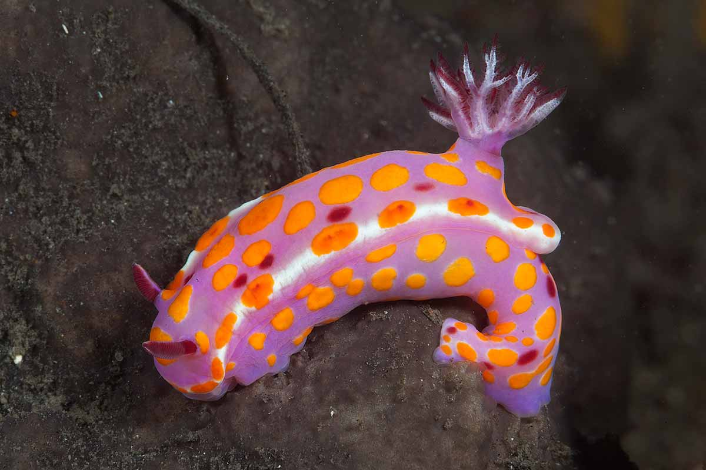
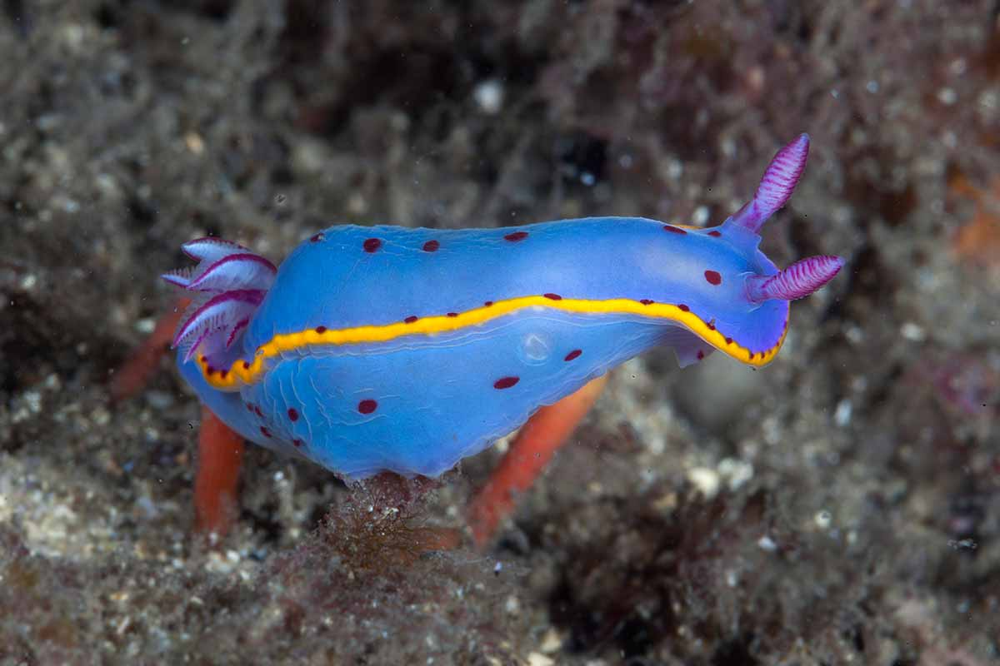
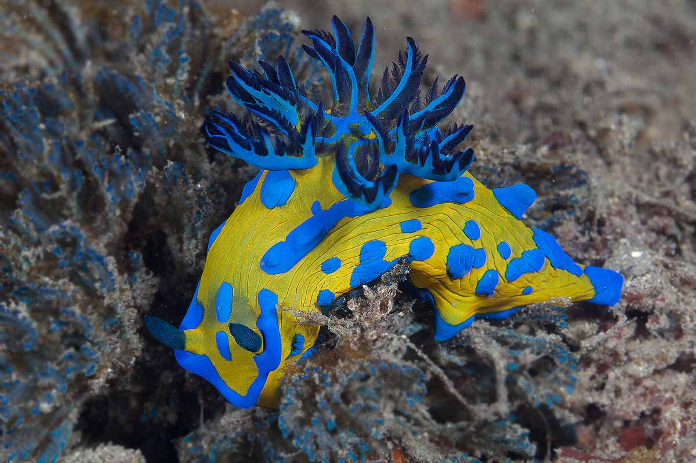

A nudibranch is a member of the Nudibranchia, a group of soft-bodied, marine gastropod mollusks which shed their shells after their larval stage. They are noted for their often extraordinary colours and striking forms. Currently, about 2,300 valid species of nudibranchs are known.
Colourful nudibranchs
-

Ceratosoma amoenum
Ceratosoma amoenum, or the clown nudibranch, is a species of colorful dorid nudibranch, a sea slug, a shell-less marine gastropod mollusk in the family Chromodorididae.
- Kingdom
- Animalia
- Phylum
- Mollusca
- Class
- Gastropoda
- Superfamily
- Doridoidea
- Family
- Chromodorididae
- Genus
- Ceratosoma
- Species
- C. amoenum
-

Hypselodoris bennetti
Hypselodoris bennetti is a species of colourful sea slug or dorid nudibranch, a marine gastropod mollusk in the family Chromodorididae.
- Kingdom
- Animalia
- Phylum
- Mollusca
- Class
- Gastropoda
- Superfamily
- Doridoidea
- Family
- Chromodorididae
- Genus
- Hypselodoris
- Species
- H. bennetti
-

Tambja verconis
Tambja verconis, common name Verco’s nudibranch, is a species of brightly coloured “sea slug”, more correctly a nudibranch, a marine gastropod mollusk in the family Polyceridae.
- Kingdom
- Animalia
- Phylum
- Mollusca
- Class
- Gastropoda
- Superfamily
- Polyceroidea
- Family
- Polyceridae
- Subfamily
- Nembrothinae
- Genus
- Tambja
- Species
- T. verconis
Habitat
Nudibranchs occur in seas worldwide, including both the tropics and Antarctica.
Nudibranchs live at virtually all depths of salt water, from the intertidal zone to depths of well over 700 m. The greatest diversity of nudibranchs is seen in warm, shallow reefs, although a new nudibranch species was discovered at a depth near 2 500 m.